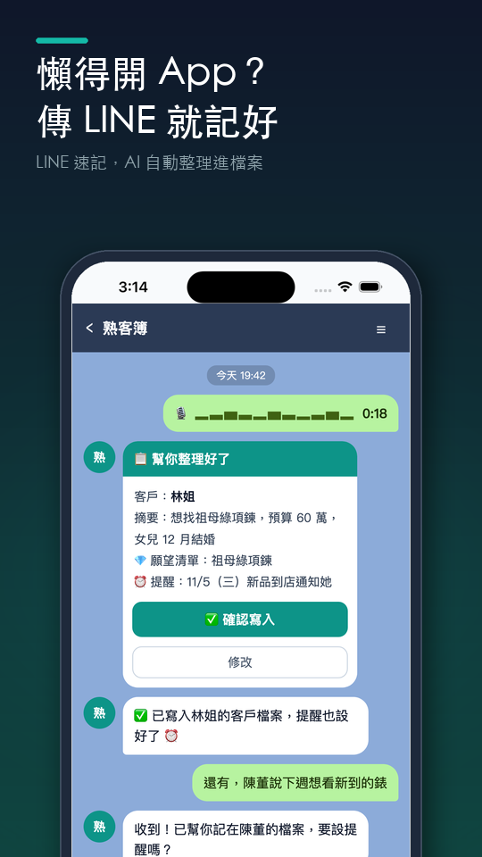

LINE 速記教學：不用開 App，傳 LINE 就把客人記好
情境：你剛在外面拜訪完陳先生，正在等捷運。LINE 本來就開著，比起再打開另一個 App，直接傳一段語音給熟客簿最快：「剛見完陳先生，對儲蓄險有興趣，下週三再聯絡」。
熟客簿會在 LINE 裡回你一張整理好的卡片，按「確認寫入」就存進陳先生的客戶檔案，提醒也一起設好。
※ LINE 速記目前開放台灣、日本、泰國、印尼。

操作步驟
在 App 打開 LINE 速記設定
到 設定 分頁，在帳號區塊點 LINE，再點 設定 LINE 速記。
加熟客簿 LINE 好友
點 加入熟客簿好友，LINE 會打開熟客簿的官方帳號，按加入好友。如果 LINE 沒有自動打開，可以在 LINE 搜尋 @612cghzx。
把綁定碼傳給熟客簿
回到 App，點一下畫面上的 6 位數綁定碼複製，到 LINE 貼上傳給熟客簿（綁定碼 10 分鐘內有效）。收到「✅ 綁定成功！」就完成了。
傳語音或文字給熟客簿
之後直接在 LINE 傳語音或文字，例如「剛見完陳先生，對儲蓄險有興趣，下週三再聯絡」。連續幾則訊息會合併成一筆；如果名字對到好幾位客人，熟客簿會請你選，也可以選「建新客戶」。
確認寫入客戶檔案
熟客簿會回一張 📋 幫妳整理好了 卡片，列出客戶、摘要、偏好、願望與提醒。沒問題按 確認寫入；對錯人按 換客戶；不要這筆就按 捨棄。卡片 30 分鐘內有效。
小技巧
- LINE 速記和 App 裡的語音速記共用每天的 AI 分析次數。
- 想讓客人傳給你的 LINE 訊息也自動歸檔，可以再連接自己的 LINE 官方帳號，請見「連接 LINE 官方帳號」教學。
常見問題
- 找不到 LINE 速記的設定？
- LINE 速記目前開放台灣、日本、泰國、印尼；在開放地區，設定分頁的帳號區塊會有「LINE」選項。
- 綁定碼過期了怎麼辦？
- 綁定碼 10 分鐘內有效，過期的話回到 App 的 LINE 速記設定重新產生一組即可。
- 可以傳照片嗎？
- LINE 速記會整理你傳的語音與文字內容；客人或商品的照片請在 App 裡加到願望清單、報價或成交紀錄。
- 要解除綁定怎麼做？
- 到設定 → LINE → 管理 LINE 速記，點「解除連結」。
想直接試試看？
熟客簿是給第一線銷售顧問用的客戶管理 App：講 30 秒記好客人、生日回訪自動提醒、新貨到了幫你找出該通知誰。免費試用 14 天，不用綁信用卡。